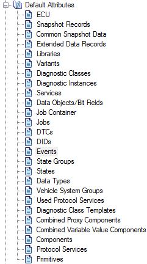

Navigation Tree for ABS/ESP Example (Standard View)
Navigation Tree for ABS/ESP Example (Standard View)
[TREE-R010]
This order is also applied in:
[TREE-R020] ECU Information Context Menu]
[TREE-R310] The context menu allows to run a variant plug-in [PLG-R100-Variant].

Attribute Lists in Navigation Tree
[TREE-R090] Chapter "Default Attributes" provides one sub-chapter for each CANdela data class that holds attributes [ATTR-R050].
[TREE-R050] Default Attributes Order CANdelaStudio shows the tree nodes for default attribute lists in the following order:
| Node | Description |
|---|---|
| ECU | |
| Libraries | [TREE-R050-LIB] |
| Variants | |
| Diagnostic Classes | |
| Diagnostic Instances | |
| Services | |
| Data Objects/Bit Fields | |
| Job Container | |
| Jobs | |
| DTCs | |
| DIDs | |
| Events | [TREE-R050-Event] |
| Event Operation Cycles | [TREE-R050-OpCyc] |
| Event Indicators | [TREE-R050-Ind] |
| Event Indicator Connections | [TREE-R050-IndConn] |
| Event Conditions | [TREE-R050-EvCond] |
| Event Debounce Algorithms | [TREE-R050-Deb] |
| Snapshot Records | [TREE-R050-SR] |
| Extended Data Records | [TREE-R050-EDR] |
| State Groups | |
| States | |
| Data Types | |
| Vehicle System Groups | |
| Used Protocol Services | (E) |
| Diagnostic Class Templates | (E) |
| Combined Proxy Components | (E) |
| Combined Variable Value Components | (E) |
| Components | (E) |
| Protocol Services | (E) |
| Primitives | (E) |
Legend
Diagnostic instances whose names appear in boldface in the tree view are classified as "required".
Diagnostic Instance Shown with Maturity
[TREE-R200] If...
CANdelaStudio displays the Maturity of diagnostic instances and job containers in the tree:
[44%][in progress]You can edit the maturity value in the Attributes Property Page of an object.
[TREE-R210 Segment Number in Tree] If...
[SEGNUM=74],For display in the tree, CANdelaStudio does not check the attribute category (CDS-69251 9.0 SP1; before, it checked for the category qualifier "DIOGENES").
See [SEGNUM-R100].
[TREE-R320] The context menu allows to run a diagnostic instance plug-in [PLG-R100-Instance].
See above at Diagnostic Instance.